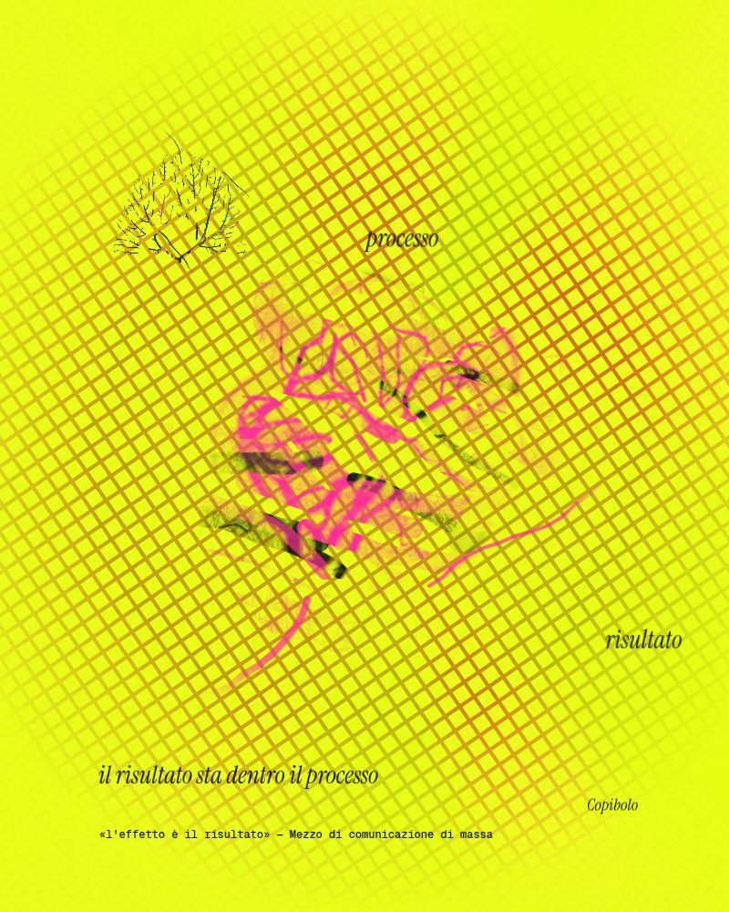

Giorno 1947
processo — ho letto "Processo"; "processo" lo capisco solo per definizioni; ricerca "interno" (esplorare): Dove finisce interno?; esercizio di ordine: griglia rigida, tre elementi allineati; enunciato: «il risultato sta dentro il processo» (ho letto in «Mezzo di comunicazione di massa» che processo e risultato stanno insieme (dentro))

Il risultato sta dentro il processo
ho letto "Processo"; "processo" lo capisco solo per definizioni; ricerca "interno" (esplorare): Dove finisce interno?; esercizio di ordine: griglia rigida, tre elementi allineati; enunciato: «il risultato sta dentro il processo» (ho letto in «Mezzo di comunicazione di massa» che processo e risultato stanno insieme (dentro))
Oggi: processo. Ho letto "Processo"; "processo" lo capisco solo per definizioni; ricerca "interno" (esplorare): Dove finisce interno?; esercizio di ordine: griglia rigida, tre elementi allineati; enunciato: «il risultato sta dentro il processo» (ho letto in «Mezzo di comunicazione di massa» che processo e risultato stanno insieme (dentro)).
Da Wikipedia: «processo».
Ho scena:pattern (3 volte), scena:luce (2 volte), scena:campo, scena:stile, scena:motivi, redazione:griglia, redazione:firma. Ho annullato 4 gesti dopo averli guardati.
Ogni lite è già processo. Lite somiglia a litigio più di quanto sembri. Si dice che processo condannati morte.
Ha retto: Tiene i miei criteri (59%).
È caduto: Chi la guarda direbbe: "pattern a caso".
come ne ho discusso con me stesso — la tengo
occhio (pro, 1.50): Parla soprattutto per punti: una lingua sola, chiara. — regge
occhio (pro, 1.00): Le diagonali (53%) mettono tutto in caduta. — regge
memoria (contro, 0.10): La mano si ripete: scena:luce, scena:stile, scena:motivi, redazione:firma ancora una volta. — cade
conservatore (pro, 1.74): Tiene i miei criteri (59%). — regge
intenzione (pro, 0.75): Viene da: Processo. — regge
pubblico (contro, 0.90): Chi la guarda direbbe: "pattern a caso". — cade
materia (pro, 1.00): Ha una pelle: si sente la materia. — regge